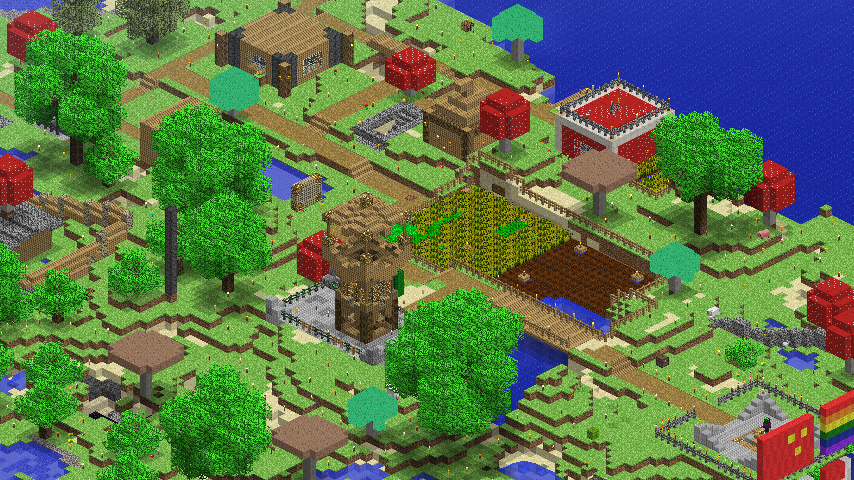
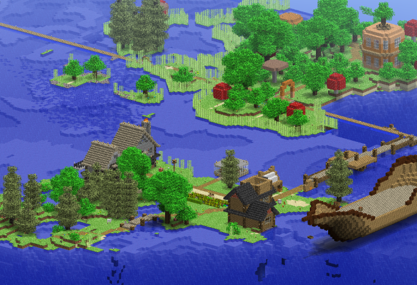
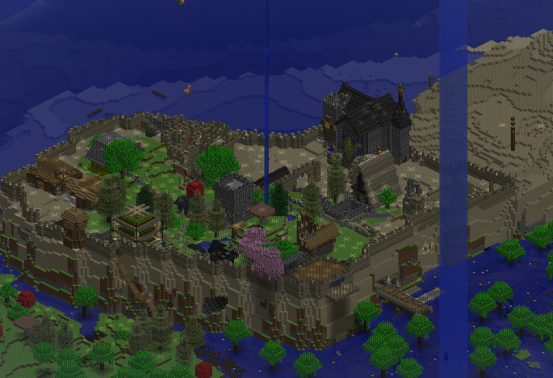
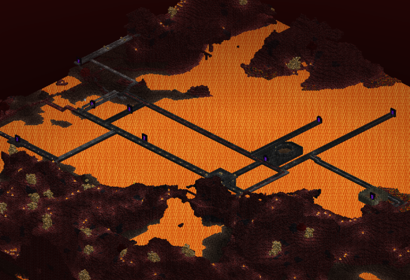

Viflcraft ReIndev Server Version: ReIndev 2.8.1_04 Uptime: 24/7 Description: Just a survival server for now, in the future I'll be taking your ideas and implementing whatever possible. Current Server IP: rid.minecraft.pe Join our Discord Server screenshots    